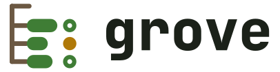

Status, diffs and logs across every git repository under one directory.
git answers questions about one repository at a time. In a
directory holding twenty clones, the useful questions — which have uncommitted work,
what branch is each on, what did I touch today — have no answer at all.
grove answers them.
api auth-service feat/ABC-123-token-refresh clean ↑0 ↓0 billing develop ~4 ↑0 ↓0 gateway main ~2 ?1 ↑1 ↓0 web dashboard develop clean ↑0 ↓0 landing develop ~2 ↑0 ↓0 5 repos · 3 dirty · 1 ahead · 0 behind
develop api/billing web/dashboard web/landing feat/ABC-123-token-refresh api/auth-service main api/gateway
── api/billing ──────────────────────────────────── internal/invoice/render.go | 18 +++++++++++++----- internal/invoice/tax.go | 12 ++++++------ internal/ledger/post.go | 6 +++--- migrations/0042_credit.sql | 14 ++++++++++++++ 4 files changed, 36 insertions(+), 14 deletions(-) ── api/gateway ─────────────────────────────────── cmd/gateway/main.go | 9 ++++++--- internal/proxy/route.go | 17 +++++++++++------ 2 files changed, 17 insertions(+), 9 deletions(-) ── web/landing ─────────────────────────────────── src/pages/pricing.tsx | 21 ++++++++++++++------- src/styles/tokens.css | 4 ++-- 2 files changed, 16 insertions(+), 9 deletions(-)
9f2ab08 api/billing aymen credit notes use ledger currency 3d0c14e web/landing aymen pricing table reads tokens.css 77e1d54 api/gateway aymen forward the request id upstream b02c6aa api/auth-service aymen rotate refresh tokens on reuse 4e8fa13 web/dashboard aymen drop the unreadable chart legend c57b290 api/billing aymen credit note migration, forward 08d4e6f api/gateway aymen time out upstreams at 5s e1a7c34 web/landing aymen the hero stops reflowing at 380px
Three of the five have uncommitted work, and gateway
is a commit ahead of its remote. One command, every repository.
The same five repositories, grouped by the branch they are on:
one ticket branch, in one repository — the rest sit on develop and
main.
A diffstat per repository. The two with nothing to show drop out — of the answer, and of the tree beside it.
Every repository's commits, merged into one timeline and
sorted by date. --since, --author and -n are git's
own.
→Inside a grove but outside any repository, plain git status becomes
grove status — and the same for diff, fetch,
log and branch. It prints the grove command it ran, so
nothing happens invisibly. Everywhere else, including inside a clone, git is
untouched.
Installs grove and git-grove, the shim the
wrapper above is built on. Linux and macOS.
grove never changes a working tree. There is no pull, push,
checkout or commit; fetch is the only network command and it touches no
files. Anything that mutates goes through grove exec, where you type the
command yourself and grove only fans it out.